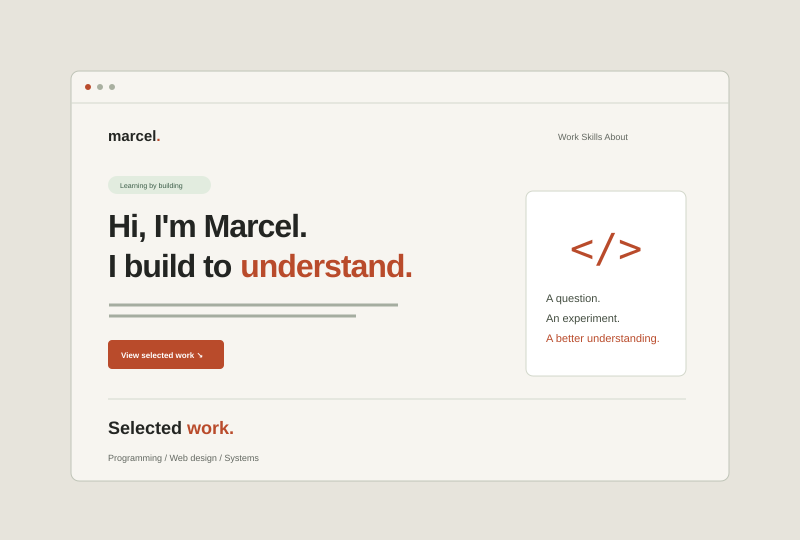

01 WEB DEVELOPMENT
A personal space
on the web.
A portfolio that introduces who I am through what I make. Built around clear navigation, readable content and room for the work to speak.
Read project notes for A personal space on the web
The idea. Present a student profile as a website with a clear story: introduction, selected work, practical skills and a personal narrative.
The implementation. Semantic HTML provides the structure. CSS Grid and Flexbox create the layout, and media queries adapt it to smaller screens. Native disclosure elements keep these notes available without JavaScript.
What I practised. Information architecture, visual hierarchy, responsive layouts and checking the relationship between design and implementation. This is the website you are browsing.